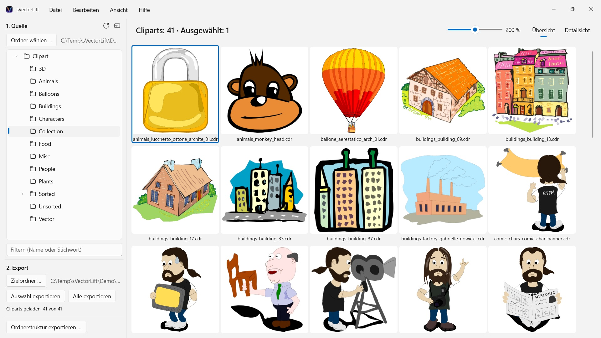
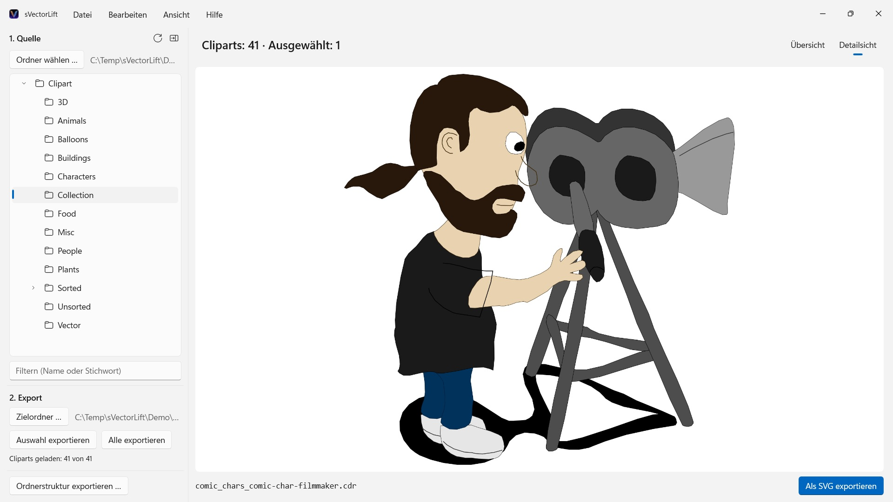

sVectorLift
Öffnet CorelDRAW 6–9 (.cdr), CMX samt CDRX, WMF, CGM, QuickDraw 3D und SVG
Tausende antike Cliparts auf CorelDRAW-CDs – eingesperrt in Dateiformaten, die kaum ein Programm mehr öffnet. sVectorLift zeigt dir ganze Sammlungen auf einen Blick und macht daraus echte SVG-Grafiken, mit denen du heute arbeiten kannst.
 Den Film ansehen – 3 Minuten auf YouTube
Den Film ansehen – 3 Minuten auf YouTube


Irgendwo im Regal liegt eine CD voller Cliparts, die du einmal gekauft hast. Die Dateien sind noch da – aber kaum ein Programm auf deinem PC öffnet sie noch, und noch weniger zeigen dir die ganze Sammlung auf einen Blick.
Unterstützte Sprachen (25): Deutsch · English · Español · Français · Italiano · Nederlands · Português (Brasil) · Português (Portugal) · Svenska · Norsk · Suomi · Polski · Čeština · Hrvatski · Magyar · Română · Türkçe · Русский · Українська · فارسی · ไทย · 日本語 · 한국어 · 简体中文 · 繁體中文
Die App folgt der Anzeigesprache von Windows.
sVectorLift macht diese Grafiken wieder nutzbar. Es baut jede Zeichnung als echtes SVG neu auf: in jeder Größe scharf, bearbeitbar, direkt verwendbar in Illustrator, Affinity, Inkscape, Figma – oder auf deiner Website. Nicht bloß wieder ansehbar. Wieder benutzbar. Dafür steht das „Lift“ im Namen: antike Vektorgrafik, gehoben auf das Niveau der Werkzeuge, mit denen du heute arbeitest.
WELCHE FORMATE
- CorelDRAW-Dokumente (.cdr), Versionen 6 bis 9
- Corel Binary Meta File (.cmx) – auch die frühe CDRX-Variante, an der andere Werkzeuge scheitern
- Windows Metafile (.wmf)
- Computer Graphics Metafile (.cgm)
- QuickDraw-3D-Metafiles (.3dm, .3dmf), als Bild gerendert
- Scalable Vector Graphics (.svg), direkt angezeigt
Viele Dateien mit der Endung .cdr sind in Wahrheit gar keine CorelDRAW-Dokumente, sondern CMX – genau daran scheitern die üblichen Konverter. sVectorLift liest beides.
sVectorLift ist für Clipart-Sammlungen gemacht: Zeichnungen, Symbole, Illustrationen. Es ist kein Layoutprogramm und will keine mehrseitigen Broschüren oder Druckvorlagen nachbauen.
ECHTE VEKTORUMWANDLUNG
Hier wird kein Vorschaubildchen abfotografiert. sVectorLift liest die Zeichnung selbst: Pfade und Bézierkurven, Füllfarben, Verläufe, Konturen und Strichmuster, Muster- und Texturfüllungen, eingebettete Fotos und Textobjekte. Heraus kommen echte Vektordaten, die du skalieren, umfärben und bearbeiten kannst – kein Bild einer Zeichnung.
Reine Rasterbilder werden stattdessen als PNG exportiert, damit nichts verloren geht.
Brauchst du statt einer Vektorgrafik ein Bild? „Als PNG exportieren“ und „Als JPG exportieren“ rechnen jede Zeichnung als Bild, auch SVG-Dateien – in der Größe, die du in den Einstellungen festlegst.
DIE SAMMLUNG DURCHSTÖBERN
- Ordnerbaum über die gesamte Clipart-Sammlung, samt Unterordnern
- Kachelübersicht mit scharfen Vektor-Vorschauen, Größe stufenlos regelbar
- Detailsicht – mit den Pfeiltasten durch den Ordner blättern
- Nach Name oder Stichwort filtern
- Mehrfachauswahl wie im Explorer: Klick, Strg-Klick, Umschalt-Klick, Auswahlrahmen, Strg+A
- Einzelne Datei direkt aus dem Explorer öffnen („Öffnen mit“ oder Doppelklick)
- Zuletzt benutzte Ordner, die sich Unterordner und markierte Datei merken
- Auswahl oder ganzen Ordner in einem Schritt exportieren
- Ganze Ordnerstrukturen samt Unterordnern auf einmal umwandeln – die Struktur bleibt im Zielordner erhalten
- Umbenennen, im Explorer anzeigen, in den Papierkorb verschieben
- Sammlung per Ziehen & Ablegen auf einen Ordner im Ordnerbaum umsortieren – nach den Regeln des Explorers, mit Strg kopieren, mit Umschalt verschieben, und mit Strg+Z zurückzunehmen; auch in den und aus dem Explorer
SCHNELL UND SCHONEND
Vorschaubilder werden nur für das berechnet, was du gerade siehst – im Hintergrund und mit Zwischenspeicher. Große Ordner öffnen sich sofort, statt erst einmal minutenlang Tausende Dateien zu verarbeiten.
Alles bleibt auf deinem PC. Keine Netzwerkverbindungen, keine Konten, keine Datenerhebung.
CorelDRAW ist eine Marke der Corel Corporation. sVectorLift ist ein unabhängiges Programm und steht in keiner Verbindung zu Corel.
- Erfordert Windows 11 oder neuer
- 24 Sprachen
- Support: SwiftAppsBavaria@gmx.net
- Datenschutzrichtlinie